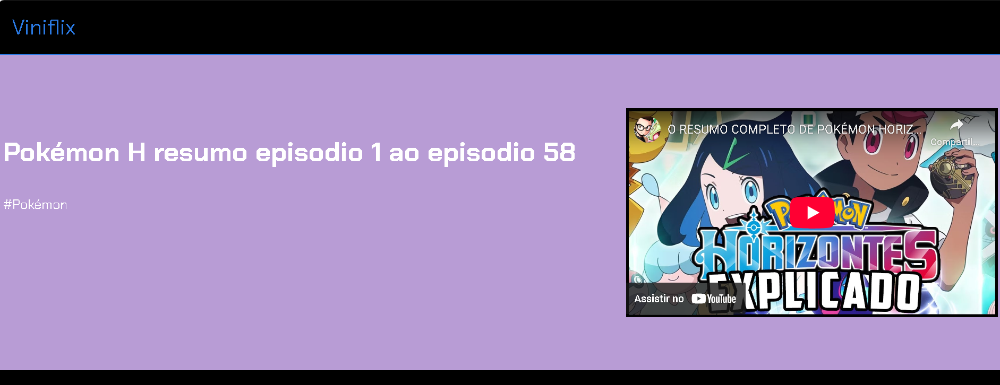
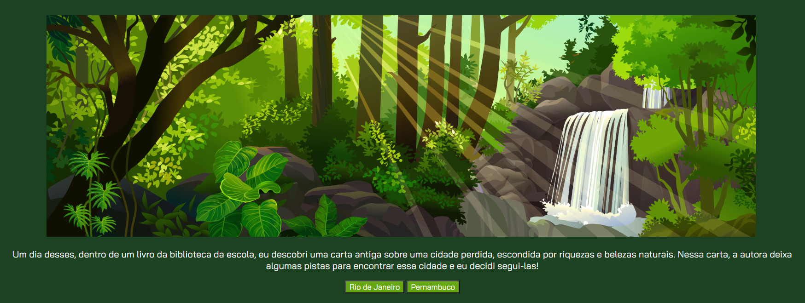
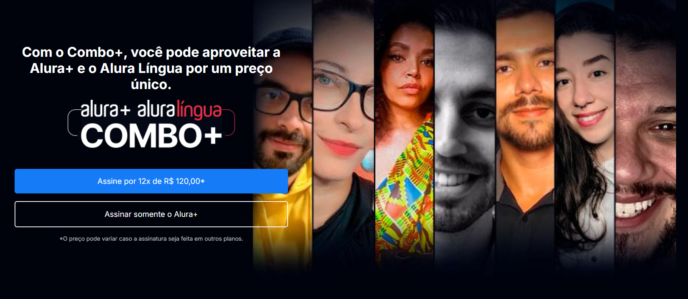

Meus projetos

Reviews: Uma Webpage Personalizada
Este projeto é uma página web que apresenta uma lista de reviews sobre o anime Pokémon Horizotes do canal Canal do Camaleão.

Explore: Um jogo de escolhas onde você sai em uma aventura
Este projeto é um jogo interativo em navegador ao qual você como protagonista acha uma uma carta antiga e tendo em vista isso é hora de agir!

Alura Plus: uma pagina feita sob orientações da Alura em uma de suas Unidades
Este projeto é uma pagina web feita para fazer uma propaganda sobre a plataforma.